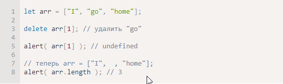
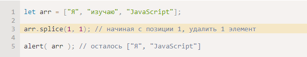
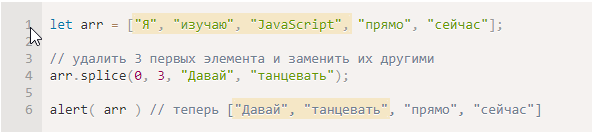
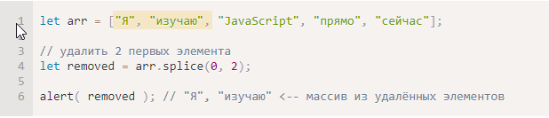
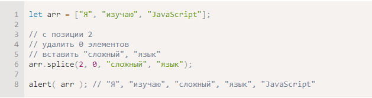
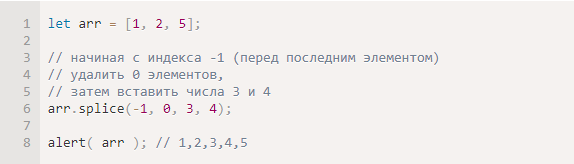
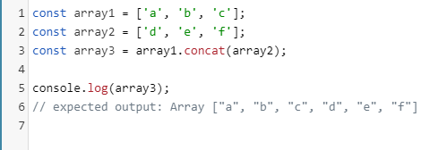
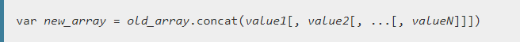
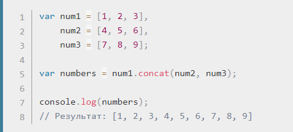

Есть и другие
splice
Как удалить элемент из массива?
Так как массивы – это объекты, то можно попробовать delete:
Вроде бы, элемент и был удалён, но при проверке оказывается, что массив всё ещё имеет 3 элемента arr.length == 3. Это нормально, потому что всё, что делает delete obj.key – это удаляет значение с данным ключом key. Это нормально для объектов, но для массивов мы обычно хотим, чтобы оставшиеся элементы сдвинулись и заняли освободившееся Методысто. Мы ждём, что массив станет короче.
Поэтому для этого нужно использовать специальные методы.
Метод arr.splice(str) – это универсальный «швейцарский нож» для работы с массивами. Умеет всё: добавлять, удалять и заменять элементы.
Он начинает с позиции index, удаляет deleteCount элементов и вставляет elem1, ..., elemN на их место. Возвращает массив из удалённых элементов. Этот метод проще всего понять, рассмотрев примеры.
Начнём с удаления:
Начиная с позиции 1, он убрал 1 элемент
В следующем примере мы удалим 3 элемента и заменим их двумя другими.
Здесь видно, что splice возвращает массив из удалённых элементов:
Метод splice также может вставлять элементы без удаления, для этого достаточно установить deleteCount в 0:
Отрицательные индексы разрешены
В этом и в других методах массива допускается использование отрицательного индекса. Он позволяет начать отсчёт элементов с конца, как тут:
Метод concat() возвращает новый массив, состоящий из массива, в контексте которого метод был вызван, соединенного с массивом (массивами) и / или другими значениями, которые были переданы в качестве аргументов.
Синтаксис
Пример:
Приведите 10 примеров массивов из обычной жизни.
Литерал (англ. literal) — запись в исходном коде компьютерной программы, представляющая собой фиксированное значение. Литералами также называют представление значения некоторого типа данных
Литералы представляют собой константы, включаемые непосредственно в текст программы. В отличие от прочих элементов языка (констант, переменных)[1], литералы не могут быть изменены в тексте программы.